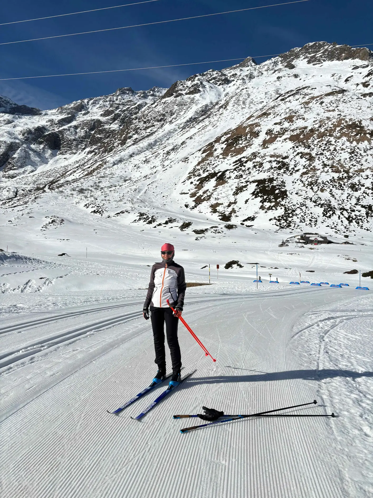
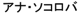

About
My name in Macedonian Cyrillic: Ана Соколова; also in Japanese katakana, thanks to Ichiro Hasuo:

You can often find Harald and me on the cross-country skiing trails around Salzburg as long as there is snow, and on the rocks near Salzburg and Vienna the rest of the year.
We love Kalymnos — it is a maximal element in the poset of places that we love :-) and top among beloved holiday places. Other maximal elements for me are of course Vienna and Salzburg, Skopje, Ohrid, Saarbrücken and a few more spots in Saarland, Lovran, and — yes — Eindhoven and Nijmegen. All these are places with dearest people or many nice memories.
My twin sister Maja is an artist and art teacher.
My family is spread across five countries and two continents. Sometimes, especially during the pandemic, I miss(ed) them all and my close friends far away.
I condemn war and destruction. “Live and let live” is the slogan I like most.